СП 424.1325800.2019 «Трубопроводы магистральные и промысловые для нефти и газа.»
О документе: разработчики, утверждение, регистрация, ключевые слова
СВОД ПРАВИЛ
СП 424.1325800.2019
Трубопроводы магистральные и промысловые для нефти и газа. Производство работ по противокоррозионной защите средствами электрохимзащиты и контроль выполнения работ
Издание официальное
Москва 2019
- 1 Исполнитель - Акционерное общество «Всесоюзный научноисследовательский институт по строительству, эксплуатации трубопроводов и объектов ТЭК - Инжиниринговая нефтегазовая компания» (АО ВНИИСТ)
- 2 ВНЕСЕН Техническим комитетом по стандартизации ТК 465 «Строительство»
- 3 ПОДГОТОВЛЕН к утверждению Департаментом градостроительной деятельности и архитектуры Министерства строительства и жилищно-коммунального хозяйства Российской Федерации (Минстрой России)
- 4 УТВЕРЖДЕН приказом Министерства строительства и жилищно-коммунального хозяйства Российской Федерации от 31 января 2019 года № 69/пр и введен в действие с 1 августа 2019 г.
- 5 ЗАРЕГИСТРИРОВАН Федеральным агентством по техническому регулированию и метрологии (Росстандарт)
В случае пересмотра (замены) или отмены настоящего свода правил соответствующее уведомление будет опубликовано в установленном порядке. Соответствующая информация, уведомление и тексты размещаются также в информационной системе общего пользования на официальном сайте разработчика (Минстрой России) в сети Интернет
© Минстрой России, 2019
Настоящий нормативный документ не может быть полностью или частично воспроизведен, тиражирован и распространен в качестве официального издания на территории Российской Федерации без разрешения Минстроя России
Дата введения 2019 -08 -01
УДК 620.197.5 ОКС 91.040, 93.020
Ключевые слова: магистральный трубопровод, промысловый трубопровод, сооружение, монтаж, коррозия, катодная защита, АЗ, защитные заземления, изолирующие фланцы, контрольно-измерительные и диагоностические пункты, электрод сравнения, преобразователи
Руководитель организации- разработчика: Генеральный директор АО ВНИИСТ
О.О. Морозов
Руководитель разработки
Первый заместитель генерального директора
С.А. Клепиков
Должность личная подпись инициалы, фамилия
Исполнители
Заместитель директора ЦТиОСТ
А.Н. Бутовка
Должность личная подпись инициалы, фамилия
Ведущий научный сотрудник ЦТиОСТ
Е.А. Фомина
Должность личная подпись инициалы, фамилия
Научный сотрудник ЦТиОСТ
Н.В. Строганов
Должность личная подпись инициалы, фамилия
Введение
Настоящий свод правил разработан с учетом требований Федеральных законов от 29 июня 2015 г. № 162-ФЗ «О стандартизации в Российской Федерации», от 29 декабря 2004 г. № 190-ФЗ «Градостроительный кодекс Российской Федерации», от 30 декабря 2009 г. № 384-ФЗ «Технический регламент о безопасности зданий и сооружений», от 21 июля 1997 г. № 116-ФЗ «О промышленной безопасности опасных производственных объектов».
Цель разработки свода правил - обеспечение безопасности и эффективности работ по обустройству магистральных и промысловых трубопроводов системами электрохимической защиты от коррозии.
Настоящий свод правил разработан авторским коллективом АО ВНИИСТ (д-р техн. наук В.В. Притула , канд. техн. наук В.Б. Ковалевский , канд. техн. наук М.А. Башаев , канд. техн. наук А.О. Иванцов, Е.А. Фомина, О.Н. Головкина, А.Н. Бутовка).
Трубопроводы магистральные и промысловые для нефти и газа. Производство работ по противокоррозионной защите средствами электрохимзащиты и контроль выполнения работ
Main and field oil and gas pipelines. Works for corrosion protection by the means of cathodic protection and their implementation control
1Область применения
2Нормативные ссылки
В настоящем своде правил приведены ссылки на следующие нормативные документы:
ГОСТ 9.602-2016 Единая система защиты от коррозии и старения. Сооружения подземные. Общие требования к защите от коррозии
ГОСТ 5272-68 Коррозия металлов. Термины
ГОСТ 23706-93 (МЭК 51-6-84) Приборы аналоговые показывающие электроизмерительные прямого действия и вспомогательные части к ним. Часть 6. Особые требования к омметрам (приборам для измерения полного сопротивления) и приборам для измерения активной проводимости
ГОСТ 24297-2013 Верификация закупленной продукции. Организация проведения и методы контроля
Издание официальное
ГОСТ Р 12.3.048-2002 Система стандартов безопасности труда. Строительство. Производство земляных работ способом гидромеханизации. Требования безопасности
ГОСТ Р 50838-2009 (ИСО 4437:2007) Трубы из полиэтилена для газопроводов. Технические условия
ГОСТ Р 51164-98 Трубопроводы стальные магистральные. Общие требования к защите от коррозии
ГОСТ Р 57190-2016 Заземлители и заземляющие устройства различного назначения. Термины и определения
СП 28.13330.2017 «СНиП 2.03.11-85 Защита строительных конструкций от коррозии»
СП 36.13330.2012 «СНиП 2.05.06-85* Магистральные трубопроводы» (с изменением № 1)
СП 52.13330.2016 «СНиП 23-05-95* Естественное и искусственное освещение»
СП 86.13330.2014 «СНиП III-42-80* Магистральные трубопроводы» (с изменениями № 1, № 2)
СП 245.1325800.2015 Защита от коррозии линейных объектов и сооружений в нефтегазовом комплексе. Правила производства и приемки работ
Примечание -При пользовании настоящим сводом правил целесообразно проверить действие ссылочных документов в информационной системе общего пользования - на официальном сайте федерального органа исполнительной власти в сфере стандартизации в сети Интернет или по ежегодному информационному указателю «Национальные стандарты», который опубликован по состоянию на 1 января текущего года, и по выпускам ежемесячного информационного указателя «Национальные стандарты» за текущий год. Если заменен ссылочный документ, на который дана недатированная ссылка, то рекомендуется использовать действующую версию этого документа с учетом всех внесенных в данную версию изменений. Если заменен ссылочный документ, на который дана датированная ссылка, то рекомендуется использовать версию этого документа с указанным выше годом утверждения (принятия), Если после утверждения настоящего свода правил в ссылочный документа, на который дана датированная ссылка, внесено изменение, затрагивающее положение, на которое дана ссылка, то это положение рекомендуется применять без учета данного изменения. Если ссылочный документ отменен без замены, то положение, в котором дана ссылка на него, рекомендуется применять в части, не затрагивающей эту ссылку. Сведения о действии сводов правил целесообразно проверить в Федеральном информационном фонде стандартов.
3Термины и определения
В настоящем своде правил применены термины по [1], ГОСТ 9.602, ГОСТ 5272, ГОСТ Р 51164 и ГОСТ Р 57190, а также следующие термины с соответствующими определениями:
- 3.1вспомогательный электрод (датчик потенциала)
- Электрод, имитирующий условия катодной поляризации на реально защищаемом трубопроводе, выполненный из материала трубопровода. Примечание - Площадь вспомогательного электрода определена нормативной документацией.
- 3.2вставка электроизолирующая
- Вставка между двумя участками трубопровода, нарушающая его электрическую непрерывность.
- 3.3контрольно-измерительный пункт
- Устройство для контроля параметров электрохимической защиты и/или коммутации средств электрохимической защиты с возможностью контроля коррозионных процессов.
- 3.4преобразователь катодной защиты
- Устройство, преобразующее переменный ток в постоянный в установках катодной защиты.
- 3.5станция катодной защиты
- Электротехнический комплекс устройств, предназначенный для преобразования переменного напряжения сети в регулируемое постоянное напряжение, содержащий устройства сопряжения с телемеханикой и средства измерения.
- 3.6установка дренажной защиты
- Комплекс устройств, состоящий из электрического дренажа, дренажной линии и контрольно-измерительных пунктов, обеспечивающий отвод (дренаж) токов из трубопровода в землю или к источнику блуждающих токов.
- 3.7установка катодной защиты
- Комплекс устройств, состоящий из источника электроснабжения, станции катодной защиты, дренажной линии, анодного заземления и контрольно-измерительного пункта.
- 3.8установка протекторной защиты
- Комплекс устройств, включающий один или несколько протекторов, провода (кабели) и контрольно-измерительный пункт.
- 3.9электрод сравнения длительного действия
- Стационарный электрод, не оказывающий влияния на электрохимические процессы, протекающие на защищаемом объекте, имеющий стабильный во времени и воспроизводимый собственный потенциал.
4Сокращения
В настоящем своде правил применены следующие сокращения: A3 - анодное заземление; ВЭИ - вставка электроизолирующая; КДП - контрольно-диагностический пункт; КИП - контрольно-измерительный пункт;
КТП - комплектная трансформаторная подстанция;
ЛЭП - линия электропередач;
ППР - проект производства работ;
СКЗ - станция катодной защиты;
СКЗС - станция катодной защиты столбовая;
СТП - столбовая трансформаторная подстанция;
УКЗ - установка катодной защиты;
УДЗ - установка дренажной защиты;
УЗТ -устройство защиты трубопровода (от наведенного переменного тока);
ЭХЗ - электрохимическая защита.
5Монтаж систем электрохимической защиты
Тип, конструкция и материал защитного покрытия и средства электрохимической защиты трубопроводов от коррозии должны быть определены в проектной документации системы ЭХЗ, которая разрабатывается одновременно с проектной документацией нового или реконструируемого трубопровода.
Подготовительные работы к монтажу средств электрохимической защиты должны выполняться в соответствии с ППР, ГОСТ 24297 и включают в себя:
- входной контроль оборудования и материалов;
- входной контроль оборудования ЭХЗ;
- организацию хранения средств и установок ЭХЗ;
- подготовительные работы в зоне строительства (расчистка и подготовка площадок под устройство установок катодной, дренажной, протекторной защиты, АЗ).
Подготовительные работы должны выполняться в соответствии с СП 245.1325800.2015 (раздел 6).
5.1Монтаж установок катодной защиты
Перед началом монтажа УКЗ необходимо выполнить следующие подготовительные работы:
- разметить участок производства работ;
- выбрать и обустроить место для хранения оборудования установки катодной защиты, монтажных узлов, деталей, метизов, инструментов и материалов перед монтажом;
- доставить на участок землеройную технику, строительные машины и механизмы;
- подготовить участок для производства работ по устройству катодной защиты;
- доставить на участок оборудование катодной защиты, монтажные узлы, детали, метизы, инструменты, приспособления и материалы.
Хранить оборудование УКЗ, монтажные узлы, детали, инструменты, метизы и материалы на участке производства работ следует в соответствии с технической документацией организацийизготовителей оборудования.
Перед установкой на место последующей эксплуатации необходимо освободить устройство от упаковки изготовителя и произвести его внешний осмотр, в процессе которого:
- убедиться в отсутствии механических повреждений наружных частей;
- проверить надёжность присоединения проводов и кабелей, заземления дверей и боковых стенок шкафа устройства;
- проверить состояние и надежность крепления всех механических узлов и деталей шкафа устройства;
- проверить четкость фиксации и отсутствие механических заеданий;
- проверить комплектность органов управления на распределительном щите.
5.1.1 Монтаж установок катодной защиты с питанием от сети
- 5.1.1.1 При сооружении установок катодной защиты с питанием от сети переменного тока должны быть выполнены следующие технологические строительно-монтажные операции:
- разработка грунта под оборудование катодной защиты, воздушной или кабельной линии энергоснабжения;
- прокладка воздушных токопроводов или кабелей в грунте;
- установка питающей трансформаторной подстанции (СТП, КТП) при питании катодной защиты от линии электропередачи напряжением 6 - 10 кВ;
- сооружение АЗ;
- сооружение защитного заземления и грозозащиты;
- монтаж источника тока катодной защиты (преобразователя тока защиты) или блочно-комплектного высоковольтного устройства катодной защиты при питании от линии электропередачи напряжением 6 - 10 кВ;
- установка КИП;
- монтаж катодного вывода;
- монтаж электрических цепей УКЗ, соединительных и электродренажных линий;
- монтаж ограждающего устройства трансформаторной подстанции, блочно-комплектного УКЗ или преобразователя тока защиты;
- рекультивация земельного участка по окончании производства работ.
- 5.1.1.2 При сооружении защитного заземления необходимо выполнить следующие работы:
- заземлить установленное на месте эксплуатации устройство в соответствии с [2] стальными заземляющими проводниками сечением не менее 48 мм² при толщине не менее 3 мм;
- присоединить заземляющие проводники к контуру заземления, состоящему из горизонтальных и вертикальных заземлителей, расположенному на месте эксплуатации устройства;
- обезжирить и покрыть битумной мастикой сварочные соединения в соответствии с СП 28.13330;
- измерить сопротивление заземляющих устройств в соответствии с [2].
- 5.1.1.3 При монтаже низковольтного источника тока катодной защиты (преобразователя тока защиты, блочно-комплектного низковольтного устройства катодной защиты) выполняют следующие технологические строительно-монтажные операции:
- установка в котлован трубы с последующим размещением в ней кабеля для подключения катодной установки к линии энергоснабжения, трубопроводу (защищаемому сооружению) и АЗ;
- устройство предусмотренного проектной документацией фундамента для установки преобразователя тока защиты в соответствии с ППР;
- монтаж рамы или иной несущей конструкции к фундаменту для установки преобразователя тока защиты;
- крепление кабельных труб к раме преобразователя;
- нанесение на раму и трубу защитного покрытия;
- монтаж преобразователя тока защиты на раме;
- устройство защитного заземления;
- подключение преобразователя тока защиты к питающей электрической сети.
Общий вид смонтированного низковольтного устройства катодной защиты представлен на рисунке 1.
1 - блок катодных станций; 2 - салазки
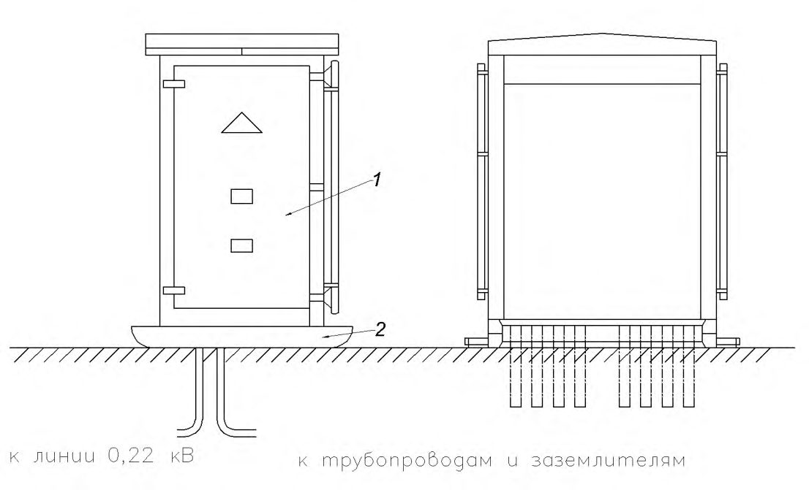
Рисунок 1 - Общий вид смонтированной низковольтной установки катодной защиты
- 5.1.1.4 При монтаже высоковольтного блочно-комплектного устройства катодной защиты выполняют следующие технологические строительно-монтажные операции:
- установка в котлован труб с последующим размещением в них кабелей для подключения катодной установки к линии энергоснабжения (при кабельном варианте) к трубопроводу и АЗ;
- устройство предусмотренного проектной документацией фундамента в соответствии с ППР;
- крепление труб с кабелями к каркасу блочно-комплектного устройства;
- нанесение на трубы защитного покрытия;
- установка и крепление блочно-комплектного устройства на фундаменте;
- установка на крыше устройства кронштейна (с траверсой и соединительной коробкой). На штатные места траверсы кронштейна устанавливаются два штыревых изолятора;
- устройство защитного заземления;
- подключение блочно-комплектного устройства катодной защиты к питающей ЛЭП напряжением 6 - 10 кВ (кабельным или воздушным вводом), для этого два отдельных провода необходимой длины вводятся через левый и правый кабельные сальники в соединительную коробку и присоединяются к зажимам сверху: провод к «фазной» цепи - к зажиму 1 (левый), провод к «нулевой» цепи - к зажиму 2 (средний), затем присоединяют провода, выходящие из соединительной коробки, к соответствующим проводам ЛЭП. Для подключения блочно-комплектного устройства катодной защиты к КТП кабель от КТП прикрепляется к кронштейну устройства, а проводники вводятся через кабельные сальники и присоединяются к аналогичным зажимам блока зажимов.
Общий вид смонтированного высоковольтного устройства катодной защиты представлен на рисунке 2.
1 - блок высоковольтного трансформатора; 2 - кронштейн воздушного ввода; 3 - блок катодных станций; 4 - изолятор проходной; 5 - труба кабельного ввода; 6 - салазки
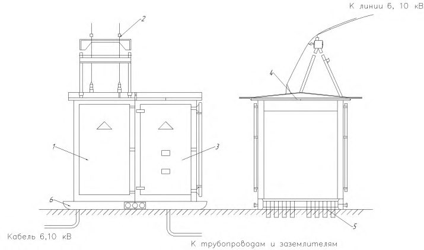
Рисунок 2 - Общий вид смонтированной высоковольтной установки катодной защиты
- 5.1.1.5 Преобразователь тока установки катодной защиты в блочно-комплектном исполнении следует помещать на фундамент, выполненный в соответствие с проектной документацией. Бетонные и металлические части фундамента и трубные вводы должны быть защищены от коррозии в соответствии с проектной документацией.
- 5.1.1.6 При сооружении установок катодной защиты в слабонесущих грунтах (песчаных, пылеватых, пылевато-глинистых, глинистых, плывунах) необходимо выполнить мероприятия исключающие эрозию грунта прилегающей к фундаменту установок территории, в соответствии с требованиями проектной документации.
5.1.2 Монтаж установок катодной защиты с автономным
питанием
- 5.1.2.1 Строительно-монтажные работы по обустройству УКЗ с автономными преобразователями тока защиты следует выполнять в соответствии с инструкциями, разработанными индивидуально для каждого конкретного вида преобразователей.
- 5.1.2.2 Выполнение строительно-монтажных работ по обустройству УКЗ с автономными преобразователями тока включает:
- монтаж собственно автономного преобразователя тока защиты согласно приложенной инструкции;
- монтаж резервирующего энергетического устройства (аккумулятора, конденсатора, иной электрической ёмкости тока);
- монтаж рабочего АЗ УКЗ;
- монтаж необходимых защитных заземляющих устройств для всей УКЗ;
- полную коммутацию всех устройств УКЗ с автономным преобразователем тока защиты.
- 5.1.2.3 После завершения монтажа каждого из конструкционных элементов УКЗ необходимо проверить их работоспособность в соответствии с прилагаемой к ним технической документацией (паспорт, инструкция по применению, руководство по эксплуатации и другие документы). После завершения монтажа и коммутации всей УКЗ в целом следует выполнить аналогичную проверку работоспособности всей УКЗ согласно прилагаемой технической документации.
5.1.3 Анодные заземления. Сосредоточенная конструкция
- 5.1.3.1 Подготовительные работы, погрузку, транспортирование и разгрузку электродов сосредоточенных (поверхностных) анодных заземлителей на месте производства работ следует выполнять механизированным способом без ударов и сотрясений. Запрещается удерживать такие заземлители за их провода.
- 5.1.3.2 Сооружение сосредоточенного АЗ из вертикальных неупакованных металлических железокремниевых, неметаллических графитовых, графитопластовых и эластомерных электродов осуществляют в следующей последовательности технологических строительно-монтажных операций:
- разработка экскаватором траншеи проектной глубины и длины;
- бурение скважин под электроды заземления на проектную глубину;
- установка электродов в скважины с засыпкой коксовой мелочью;
- вывод кабеля электрода заземления в стойку КИП;
- выполнение электрического контакта между выводами электродов заземления и магистрального кабеля в стойке КИП;
- присоединение магистрального кабеля к выводу на опору воздушной или кабельной линии;
- изолирование мест контактных соединений;
- контроль качества изоляции контактных соединений, находящихся в грунте, искровым дефектоскопом напряжением 20 кВ;
- засыпка траншеи грунтом и его уплотнение приводными трамбовками.
Пример АЗ из вертикальных электродов с коксовой засыпкой приведен на рисунке 3.
1 - глина, кокс или коксо-минеральный активатор (по проекту); 2 - электрод; 3 - кабель; 4 - изолированное кабельное соединение;
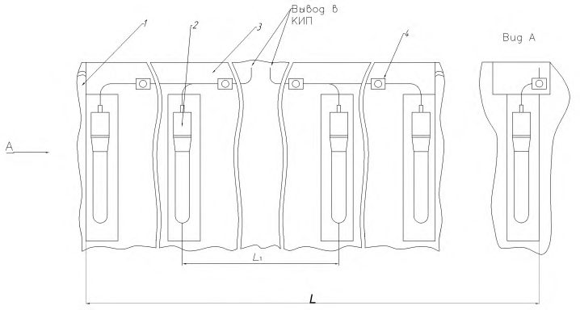
L - протяженность АЗ, м; L1 - расстояние между соседними электродами, м
Рисунок 3 - Анодное заземление из вертикальных электродов
- 5.1.3.3 При сооружении сосредоточенного АЗ из горизонтально уложенных неупакованных электродов, требуется выполнять следующие технологические строительно-монтажные операции:
- разработку экскаватором траншеи проектной глубины и длины;
- засыпку дна траншеи слоем коксовой мелочи или графитовой крошки до проектной отметки высоты, но не менее 100 мм с уплотнением приводными трамбовками;
- укладку электродов горизонтально в траншею;
- засыпку электродов слоем коксовой мелочи или графитовой крошки до отметки проектной высоты, но не менее 100 мм;
- засыпку траншеи слоем грунта 0,5 м с уплотнением приводными трамбовками, при этом провода электродов должны быть закреплены в вертикальном положении;
- вывод кабеля электрода заземления в стойку КИП;
- выполнение электрического контакта между выводами электродов заземления и магистрального кабеля в стойке КИП;
- соединение магистрального кабеля к выводу на опору воздушной или кабельной линии;
- изолирование мест контактных соединений;
- проверку качества изоляции контактных соединений, находящихся в грунте, искровым дефектоскопом напряжением 20 кВ;
- окончательную засыпку траншеи грунтом и его уплотнение приводными трамбовками.
Пример АЗ из горизонтально уложенных неупакованных электродов с коксовой или графитовой засыпкой приведен на рисунке 4.
1 - глина, кокс или коксо-минеральный активатор (по проекту); 2 - кабель; 3 - электрод АЗ; 4 - изолированное кабельное соединение
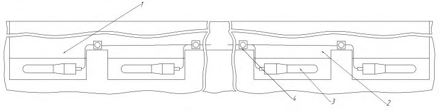
Рисунок 4 - Анодное заземление из горизонтальных электродов
5.1.3.4 При сооружении сосредоточенного АЗ с комплектными электродами-заземлителями, упакованными коксовой мелочью (или иным видом активирующей засыпки), устанавливаемого вертикально или укладываемого горизонтально, необходимо выполнение технологических строительно-монтажных операций по 5.1.3.2, 5.1.3.3 за исключением операций по засыпке коксовой мелочью. Пример АЗ с комплектными заземлителями приведен на рисунке 5.
В сухих и маловлажных (объемной влажностью не более 5 % 7 %) грунтах электроды-заземлители после контроля качества изоляции контактных соединений необходимо залить глинистым раствором из расчета 0,04 м³ на каждый электрод.
1 - монтажная скоба; 2 - транспортная крышка; 3 - кабель присоединения; 4 - фиксирующая крышка; 5 6 - коксо-минеральный активатор; 7 - корпус заземлителя
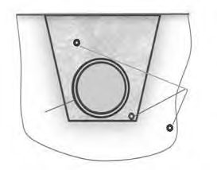
- рабочий электрод;
Рисунок 5 - Комплектный анодный заземлитель
5.1.4 Анодные заземления. Протяженная конструкция
- 5.1.4.1 Протяженное анодное заземление предназначено для применения в высокоомных и вечномерзлых грунтах.
- 5.1.4.2 Протяженные анодные заземлители могут быть проложены: в самостоятельной траншее, бестраншейным способом, совмещенно в одной траншее с защищаемым трубопроводом. По месту расположения протяженное АЗ может находиться над трубопроводом, под трубопроводом и с любой стороны сбоку от него (рисунок 6), на расстоянии не менее 0,3 м от трубопровода.
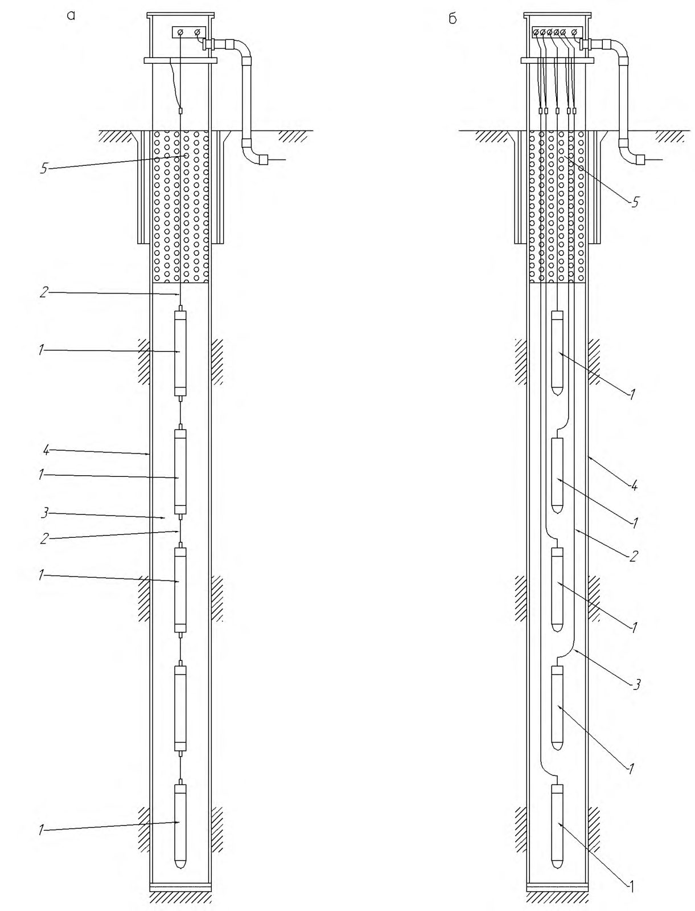
1 - трубопровод; 2 - анодные заземлители Рисунок 6 - Варианты расположения протяженного АЗ относительно трубопровода
- 5.1.4.3 Протяженные анодные заземлители доставляют на место монтажа и хранят на барабанах (в исключительных случаях - в бухтах). Учитывая, что монтажно-транспортная длина электрода, протяженного АЗ, может быть меньше проектной длины, соединение электродов при монтаже всего заземления допускается осуществлять посредством промежуточных КИП или непосредственно в грунте с применением технологий, комплектующих и материалов, рекомендованных организацией-изготовителем.
- 5.1.4.4 Общий порядок монтажа протяженных анодных заземлителей включает выполнение следующих технологических строительно-монтажных операций:
- рытьё траншеи (подготовку места для анодных заземлителей в траншее трубопровода, подготовку расщелины для размещения анодных заземлителей при бестраншейной прокладке) проектной глубины и протяженности;
- подготовку постели под анодный заземлитель;
- раскатку протяженных анодных заземлителей;
- укладку протяженных анодных заземлителей в траншею (или в иное заранее подготовленное место);
- соединение электродов в единую электрическую цепь проектной длины;
- засыпку траншеи грунтом с уплотнением трамбовками;
- подключение уложенного протяженного анодного заземлителя через КИП к катодному преобразователю тока;
- технологические операции по проверке работоспособности собранного протяженного АЗ.
- 5.1.4.5 При прокладке протяженного анодного заземлителя в коксовой (или иной) засыпке перед укладкой электрода в траншею (или иное подготовленное для него место) на дно траншеи (или иного места) насыпают ровный слой коксовой мелочи (или иной засыпки) толщиной от 100 до 150 мм, на который затем кладут электрод протяженного анодного заземлителя и засыпают его сверху слоем той же засыпки аналогичной толщины.
При размещении протяженного анодного заземлителя в одной траншее с трубопроводом применение коксовой засыпки, выполняемой на месте проведения монтажных работ, не допускается. Указанное ограничение не распространяется на электроды АЗ протяженного типа упакованные в коксовую оболочку на заводеизготовителе.
- 5.1.4.6 При монтаже протяженного анодного заземлителя должен быть соблюден ряд требований, обусловленных особенностями конструкции заземлителя и спецификой его работы:
- торец нерабочего конца электрода протяженного анодного заземлителя должен быть изолирован, сопротивление изоляции должно быть не менее 10 6 Ом [2]; контроль сопротивления осуществляют мегаомметром на напряжение 500 В;
- радиус внутренней кривой изгиба электрода протяженного анодного заземлителя при укладке в траншею должен быть кратностью к наружному диаметру электрода не менее 20;
- размер гранул засыпки электрода протяженного анодного заземлителя (грунта или иного материала) должен быть не более 5 мм;
- толщина покрывающего электрод протяженного анодного заземлителя слоя засыпки (грунта) перед уплотнением должна быть не менее 0,35 м;
- расход минеральной засыпки, включая шунгит, используемой для снижения сопротивления среды вокруг электрода протяженного анодного заземлителя, должен быть не менее 40 кг/м, средний диаметр ореола засыпки вокруг электрода - в диапазоне от 0,25 м до 0,3 м;
- сплошность изоляции контактных узлов электродов, проверяемая искровым дефектоскопом, должна быть не менее 5 кВ/мм;
- диэлектрическое покрытие электрода в зоне перехода «землявоздух» при контакте с дренажным кабелем или другим заземляющим электродом должно быть не менее: 1,0 м по глубине; 0,2 м по высоте превышения среднегодового уровня паводковых вод;
- расстояние между электродом протяженного анодного заземлителя и любыми другими электродами в составе комплекта электродов всего заземления должно быть не менее 20 м, за исключением анодного заземлителя одной линии;
- при раздельной укладке в самостоятельную траншею оптимальное расстояние от оси электрода до оси защищаемого трубопровода эквивалентно 6-8 диаметрам трубопровода;
- поверхность электродов не должна соприкасаться с защищаемым или другим, подземным или наземным объектом, не включенным в схему защиты.
5.1.4.7 Перед началом строительно-монтажных работ по обустройству протяженного АЗ должны быть проведены геодезические и разметочные работы по привязке трассы и прокладываемого заземления. На основе этих работ осуществляют рытье и расчистку траншеи под заземление и соединительные кабели.
5.1.4.8 Монтаж протяженного АЗ разрешено выполнять только электромонтажникам по кабельным сетям и электромонтёрам по ремонту и монтажу кабельных линий или персоналу, прошедшему специальное обучение в области монтажа средств электрохимической защиты и инструктаж по охране труда и пожарной безопасности.
- 5.1.4.9 На рабочем месте оператора-монтажника должен быть соответствующий набор инструментов, обеспечивающий высококачественное выполнение работ. Используемые при этом комплекты монтажника-спайщика должны быть проверены на соответствие перечню входящих в них материалов, изделий и их целостности.
- 5.1.4.10 При транспортировании, погрузочно-разгрузочных и строительно-монтажных работах категорически запрещается захват и подъем электродов за дренажные кабели.
- 5.1.4.11 Укладку электродов протяженного АЗ на проектные отметки необходимо осуществлять по мере засыпки траншеи при строительстве трубопровода. Грунт (или иная засыпка) ниже и выше электрода должен быть обязательно послойно уплотнен с применением трамбовки. Во время строительно-монтажных работ грунт при высыхании одновременно с уплотнением увлажняют водой из расчета 30-50 л/м длины электрода.
- 5.1.4.12 Изоляция электрода протяженного АЗ на границе перехода «земля-воздух» в местах контакта с другими электродами или дренажным кабелем на контрольно-измерительном пункте должна быть выполнена с применением полиэтиленовой трубы (например, по ГОСТ Р 50838), внутренний диаметр которой на 5-10 мм превышает диаметр электрода. Полость между полиэтиленовой трубой и электродом полностью заливают герметизирующим составом (допускается применение строительного битума твердых марок). Несплошность заливки не допускается.
- 5.1.4.13 Изоляция соединений электрода протяженного АЗ с дренажным кабелем, предназначенного для подземной эксплуатации, должна выполняться в условиях завода-изготовителя.
5.1.5 Анодные заземления. Протяженная конструкция. Наклонно-направленное бурение
- 5.1.5.1 Монтаж протяженного анодного заземлителя осуществляют с учетом технологии комплексного размещения такого электрода в скважине, сформированной методом наклоннонаправленного бурения и открытой траншеи, сформированной экскаватором перед искусственной или естественной преградой. Реализация такой технологии осуществляется поэтапно пятью основными технологическими операциями.
- 5.1.5.2 На участке перед преградой собирают последовательно плеть бурильных труб диаметром 100-200 мм и длиной, превышающей длину преграды на 50--70 м, и с её помощью формируют скважину методом наклонно-направленного бурения.
- 5.1.5.3 На участке перед преградой раскладывают электроды протяженного анодного заземлителя общей длиной, превышающей длину преграды на 50--70 м, и с двух концов нанизывают на него последовательно по одной трубной секции бурильную трубу диаметром 100-200 мм. При этом два оператора поддерживают вручную протяженный анодный заземлитель, а два других оператора также вручную аккуратно надвигают трубные секции, во избежание повреждения поверхности электрода заземления потенциально возможными внутренними выступами на трубной секции. Затем, свинчивая последовательно нанизанные трубные секции, набирают плеть бурильных труб с электродами протяженного АЗ внутри для протаскивания в пробуренную скважину.
- 5.1.5.4 Переходной муфтой (без использования сварки) соединяют бурильную трубу в скважине с плетью бурильных труб с протяженным анодным заземлителем внутри. После этого протаскивают плеть в скважину, извлекая из неё проходную бурильную трубу.
- 5.1.5.5 Закачивают в скважину и в плеть с протяженным анодным заземлителем буровой раствор, надежно фиксируя один конец протяженного заземлителя.
- 5.1.5.6 Плеть бурильных труб извлекают из скважины, вытягивая за конец плети, противоположный точке фиксации протяженного заземлителя, и оставляя само заземление в наполненной буровым раствором скважине.
Примечание -Возможен вариант применения АЗ без извлечения бурильных труб с обязательным заполнением внутритрубного пространства проводящей субстанцией.
- 5.1.5.7 Проверяют электрическую целостность протяженного АЗ и измеряют значение его переходного сопротивления в соответствии с проектной документацией системы ЭХЗ.
5.1.6 Анодные заземления. Глубинная конструкция
- 5.1.6.1 Глубинное АЗ предназначено для применения в многослойном гетерогенном (с наличием слоев многолетней мерзлоты) грунте или при ограничении места для расположения АЗ иной конструкции.
- 5.1.6.2 Для монтажа глубинного заземления следует заранее подготовить скважину необходимых диаметра и глубины в соответствии с проектной документацией.
- 5.1.6.3 Монтаж глубинного анодного заземлителя и установку его в скважину, предварительно обработанную глинистым раствором, следует выполнять сразу после окончания бурения скважины. Установку глубинного заземления в скважину следует выполнять в минимально короткий срок. Перерывы в процессе монтажа и установки недопустимы.
- 5.1.6.4 Способ монтажа глубинного АЗ зависит от конструкции и определяется проектной документацией системы ЭХЗ. При этом отдельные электроды могут быть собраны по схеме цепочки или гирлянды (рисунок 7) непосредственно организацией-изготовителем или в трассовых условиях. Монтаж в трассовых условиях следует выполнять в соответствии с рекомендациями, приведенными в технической документации изготовителя заземления.
- 5.1.6.5 Строительно-монтажные работы по обустройству глубинного АЗ следует проводить в следующей последовательности технологических операций:
- монтаж кондуктора (трубы большего диаметра, чем колонна глубинного анодного заземлителя);
- цементация затрубного пространства цементным раствором с расходом сухой смеси до 400 кг на 1пог. м;
- роторное бурение скважины глубинного АЗ;
- промывка скважины глинисто-солевым раствором;
- монтаж и спуск в скважину смонтированных изготовителем или в трассовых условиях анодных заземлителей (ручным или механизированным способом в зависимости от массы и габаритов). Перед установкой в скважину анодного заземлителя проверяют кабели присоединения и газоотводящую трубку, длина которых должна быть достаточной для обеспечения вывода на дневную поверхность и не содержать разрывов и промежуточных соединений;
- монтаж кабельных выводов;
- заполнение скважины глинистым раствором, коксовой смесью или шунгитом, а верхней части - гравием или песком в соответствии с проектной и рабочей документацией системы ЭХЗ;
- выполнение в стойке КИП электрического контакта кабелей присоединения электродов заземления и магистрального кабеля.
Противокоррозионная изоляция поверхности кондуктора, стыков глубинного АЗ, а также грунтовка и окраска стального покрытия (люка оголовка) выполняется в соответствии с СП 28.13330.
- 5.1.6.6 Монтаж и установку глубинного АЗ выполняют в соответствии с техническим требованиями на сооружение и обустройство этих конструкций, сохраняя установленную настоящим сводом правил общую последовательность технологических операций монтажа глубинных АЗ.
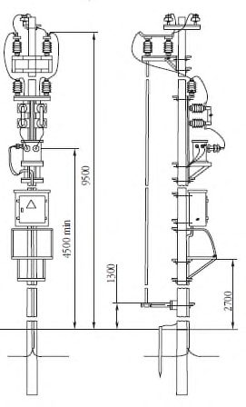
а - схема последовательного соединения электродов; б - схема параллельного соединения электродов;
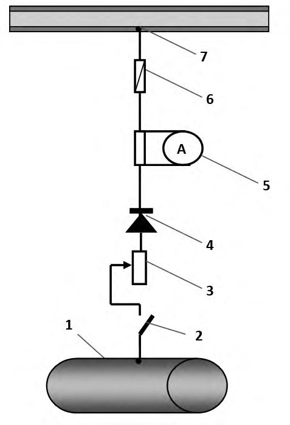
- 1 - электрод заземлителя, 2 - кабель присоединения,
3 - коксо-минеральный активатор, 4 - обсадная колонна, 5 - дренирующая засыпка
Рисунок 7 - Схемы монтажа глубинного заземления из отдельных электродов.
5.1.7 Анодные заземления. Свайная конструкция
- 5.1.7.1 Конструктивное решение и конкретные типоразмеры свайных заземлителей устанавливаются для каждой сваи индивидуально в проектной и рабочей документации на систему ЭХЗ. В порядке исключения применение свайных заземлителей допускается в необжитой местности в грунтах с низким содержанием железа.
- 5.1.7.2 Технологические строительно-монтажные операции по сооружению свайных заземлителей выполняют в следующей последовательности:
- подготовка и очистка (при необходимости) свай;
- бурение скважин под устанавливаемые сваи;
- погружение свай в скважины механизированным способом;
- солевая обработка свай в скважинах;
- электрическая коммутация свай в единый контур;
- подключение соединительного кабеля к заземлению;
- обработка оголовков свай согласно техническим решениям проектной документации системы ЭХЗ.
- 5.1.7.3 При подготовке к установке свай необходимо:
- придать конусообразную форму нижнему концу сваи;
- приварить к оголовку сваи фланец с крышкой на болтовом соединении;
- выполнить перфорацию стенок по длине свай.
- 5.1.7.4 Погружение свай в скважины следует выполнять вибровдавливанием, применяя паровоздушный молот или другое аналогичное оборудование. Оголовок сваи должен выступать над поверхностью земли на проектную высоту.
- 5.1.7.5 Солевую обработку свай проводят раствором хлорида натрия путем засыпки 19 кг хлорида натрия на 1 пог. м сваи с последующей заливкой скважины водой до полного покрытия слоя соли.
Допускается применение хлорида кальция, хлорида магния или хлорида калия или их смесей в любых отношениях в количестве, эквивалентном указанному, в пересчете на хлорид натрия. Присутствие ингибиторов (карбамида) в солевой смеси не допускается.
- 5.1.7.6 Электрическую коммутацию свай следует выполнять стальной соединительной полосой площадью не менее 199 мм² приваривая её к оголовку каждой сваи на высоте не менее 0,3 м от поверхности земли.
- 5.1.7.7 Токоведущий кабель должен быть приварен или подсоединен болтовым соединением к стальной соединительной полосе около оголовка центральной сваи заземления.
- 5.1.7.8 При обработке оголовка сваи должны быть выполнены следующие технологические операции:
- торцы свай закрывают крышками, привернутыми болтами и гайками к фланцам на оголовках;
- стальные соединительные полосы и оголовки свай на высоту не менее 0,3 м изолируют от грунта нанесением на их поверхности изоляционного покрытия в соответствие с проектной документацией;
- оголовки свай обваловывают грунтом на высоту не более 0,3 м.
- 5.1.7.9 После завершения монтажа УКЗ со свайными анодными заземлителями следует выполнить рекультивацию земельного участка.
- 5.1.7.10 После завершения строительно-монтажных работ по обустройству АЗ свайной конструкции необходимо проверить значение его сопротивления растеканию и его соответствие проектному значению. В случае завышения проектного значения сопротивления более чем на 10%, необходимо открыть крышки крайних свай и провести их дополнительную солевую обработку до достижения сопротивлением растеканию тока своего проектного значения.
5.1.8 Энергоснабжение. Трансформаторные подстанции
- 5.1.8.1 При сооружении трансформаторных подстанций катодной защиты с маслонаполненными или сухими трансформаторами следует руководствоваться правилами [2].
- 5.1.8.2 Столбовые трансформаторные конструкции необходимо монтировать в следующей последовательности технологических операций:
- разработка грунта в соответствии с проектной документацией системы ЭХЗ;
- сборка анкерной концевой опоры;
- установка анкерной концевой опоры;
- монтаж однофазного трансформатора;
- монтаж высоковольтного оборудования (разъединителя с приводом, предохранителей, разрядников, изоляторов);
- монтаж преобразователя;
- установка заземляющего устройства защитного заземления;
- монтаж соединительных электрических линий;
- устройство ограждения;
- установка предупредительных плакатов;
- подключение СТП к ЛЭП напряжением 6-10 кВ;
- проведение приемо-сдаточных испытаний вновь вводимого электрооборудования;
- проведение испытания повышенным напряжением промышленной частоты.
Общий вид столбовой трансформаторной конструкции типа СКЗС приведен на рисунке 8.
1 - опора, 2 - разъединитель, 3 - предохранитель , 4 - понижающий трансформатор, 5 - катодная станция, 6 - защитное заземление, 7 - дренажные кабели
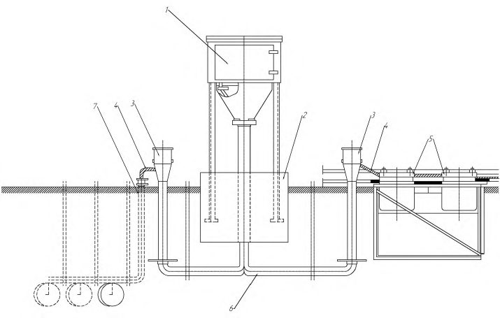
Рисунок 8 - Общий вид столбовой станции катодной защиты
При монтаже комплектной подстанции (например, типа КТП 610/0,4 кВ, 25 кВ·А) монтажные технологические операции необходимо выполнять в следующей последовательности:
- выполнить монтаж фундамента КТП (при необходимости);
- установить КТП;
- установить преобразователь;
- осуществить монтаж соединительных электрических линий;
- выполнить монтаж заземляющего устройства, защитного заземления;
- устроить ограждение;
- установить предупредительные плакаты;
- подключить КТП к ЛЭП напряжением 6-10 кВ;
- провести приемо-сдаточные испытания вновь вводимого электрооборудования;
- провести испытания повышенным напряжением промышленной частоты.
5.1.8.3 Перед установкой маслонаполненных трансформаторов масляный бак следует проверить на герметичность под избыточным давлением и отобрать пробу масла для испытания. Пробу отбирают в сухие, чистые стеклянные банки с притертыми пробками из специальных кранов в нижней части бака при температуре масла не ниже 5 о С. Следует избегать отбора проб на открытом воздухе при дожде, снегопаде, тумане и ветре для предотвращения конденсации влаги на оборудовании для отбора проб и загрязнения пробы масла. Для сокращенного химического анализа отбирают 1,5 л масла, а для испытания на пробой - 0,75 л.
5.1.8.4 При сокращенном химическом анализе определяют содержание воды и механических примесей, кислотное число и реакцию водной вытяжки. Пробивное напряжение масла в стандартном разряднике маслопробойника при напряжении обмотки высшего напряжения трансформатора до 15 кВ включительно должно быть не ниже 25 кВ.
5.1.8.5 После установки разъединителя и привода следует проверить все болтовые соединения и прочность крепления, затем соединить вал разъединителя с приводом в соответствии с монтажным чертежом. Верхнее положение рукоятки привода должно соответствовать включенному состоянию разъединителя. При регулировании и подгонке контактов следует добиться легкости и одновременности попадания ножей всех полюсов многополюсного разъединителя, устранить перекосы путем смещения изоляторов неподвижных контактов, поворотов изоляторов вокруг своей оси, применения подкладок под фланец изолятора.
5.1.8.6 Плотность прилегания разъемных контактов считается нормальной, если щуп толщиной 0,05 мм и шириной 10 мм не входит в контактное соединение глубже, чем на 2/3 своей ширины.
5.1.8.7 Соединение токоведущих проводов с контактными пластинами разъединителя должно быть надежным, исключающим нагрев контактов. Гайки контактных соединений должны быть зафиксированы контргайками или стопорными шайбами.
5.1.8.8 Предохранители монтируют в вертикальном положении на брусьях, соблюдая расстояние, указанное в проектной документации системы ЭХЗ. Разрядники всех типов должны быть установлены так, чтобы можно было проверить состояние разрядника, внешнего промежутка и положение указателя срабатывания с земли.
- 5.1.8.9 По окончании монтажа оборудования на СТП или КТП следует установить ограждение из металлической сетки, закрепленной на столбах. Дверцы ограждения и привод разъединителя должны быть заперты на замок. На железобетонной опоре СТП, опорах ЛЭП напряжением 6-10 кВ, шкафу преобразователя тока защиты (катодной станции) и ограждении должны быть прикреплены предупредительные плакаты установленного образца.
- 5.1.8.10 Воздушные и кабельные линии электропередачи, обеспечивающие работу трансформаторных подстанций, монтируют в соответствии с правилами [2] и другими документами, регламентирующими монтаж сетей энергоснабжения.
5.1.9 Вспомогательное оборудование. Электроизолирующая вставка. Электроды сравнения длительного действия, датчики скорости коррозии
- 5.1.9.1 ВЭИ должна быть неразборным изделием полной заводской готовности. Монтаж и испытания ВЭИ следует проводить в соответствии с инструкцией организации-изготовителя на установку.
- 5.1.9.2 Врезку ВЭИ производят на строящемся трубопроводе в следующей последовательности технологических операций:
- к образующимся в результате вырезки катушки концам трубопровода приваривают электрическую изолированную перемычку, сечением по меди не менее 25 мм². . Приварку перемычек и контактных соединений проводов установок ЭХЗ и КИП к поверхности трубопровода следует производить термитной или электродуговой сваркой согласно СП 86.13330.2014 (20.8);
- после вырезки катушки подготавливают кромки трубопровода под сварку в соответствии с СП 36.13330, подгоняют и вваривают катушку с ВЭИ;
- для проведения электрических измерений устанавливают КИП, оборудованный контрольными выводами;
- между участками газопровода, примыкающими к ВЭИ, должен быть установлен искровой разрядник, в соответствии с СП 245.1325800.2015 (приложение М).
- 5.1.9.3 Врезка ВЭИ на действующем трубопроводе производится после осуществления мероприятий по обеспечению безопасности в соответствии с настоящим сводом правил.
- 5.1.9.4 Для выполнения сварки при установке ВЭИ на трубопроводе допускаются сварщики, аттестованные [3] и выдержавшие испытания по сварке допускных стыков по СП 86.13330.2014 (раздел 9).
Сварочные работы должны выполняться под руководством аттестованного специалиста сварочного производства не ниже II-го уровня профессионального мастерства [3], сварочное оборудование, сварочные материалы и технологии, применяемые при проведении сварочных работ должны соответствовать [4].
- 5.1.9.5 При установке ВЭИ на трубопроводе следует соблюдать условия:
- значение несоосности патрубков трубопровода, в который встраивается электроизолирующая вставка, не более 3 мм;
- угловой перекос патрубков не более 1 o ;
- отличие расстояния между торцами патрубков трубопровода от фактической длины, устанавливаемой ВЭИ, должно быть в пределах от плюс 1 до минус 5 мм.
- 5.1.9.6 Монтаж ВЭИ в трубопроводы в части исключения воздействия на электроизолирующие вставки дополнительных нагрузок от трубопроводов (изгиб, сжатие, растяжение, кручение, перекосы, вибрация, несоосность) приведен в [5].
Необходимость установки опор или компенсаторов определяется в проектной документации.
- 5.1.9.7 Тип стационарных электродов сравнения длительного действия определяется в проектной документации.
- 5.1.9.8 Перед оборудованием КИП датчиками скорости коррозии и стационарными электродами сравнения необходимо выполнить предустановочный контроль их, в процессе которого проверяется переходное сопротивление «электрод - влагонасыщенный песок», которое должно быть не более 15 кОм [6].
- 5.1.9.9 Стационарные электроды сравнения и датчики скорости коррозии устанавливают в грунт на уровне нижней образующей трубопровода на расстоянии не более 100 мм от его боковой поверхности (в плане).
- 5.1.9.10 Электроды сравнения длительного действия, КИП, датчики скорости коррозии после установки необходимо засыпать вручную.
- 5.1.9.11 При выполнении монтажа электродов сравнения длительного действия, КИП, датчиков скорости коррозии должен проводиться строительный контроль систем ЭХЗ с оформлением соответствующих актов.
5.1.10 Защитные заземления и устройства защиты трубопровода от наведенного переменного тока
- 5.1.10.1 Заземляющие устройства и защитные заземления предназначены для прямого отвода высокого напряжения, попавшего на рабочие защитные установки и опасного для жизни обслуживающего персонала.
- 5.1.10.2 Сооружение защитных заземляющих устройств следует выполнять в следующей последовательности технологических строительно-монтажных операций:
- установка в грунт (вертикальных) или укладка в траншею (горизонтальных) электродов-заземлителей;
- укладка в траншею магистрального проводника;
- соединение магистрального проводника с электродамизаземлителями с помощью сварки;
- соединение магистрального проводника с заземляемой (защищаемой) конструкцией;
- изолирование мест сварных соединений;
- уплотнение и выравнивание грунта над заземлением;
- покраска надземной части заземляющего проводника.
- 5.1.10.3 Электроды защитного заземления изготавливаются из стальных стержней, уголков или проката другого профиля в соответствии с проектной и рабочей документацией системы ЭХЗ.
5.1.10.4 Запрещается использовать в качестве защитного заземления АЗ, а также устройство автономных (не соединенных проводниками) защитных и помехозащитных заземлителей для различных частей оборудования, доступных одновременному прикасанию.
5.1.10.5 Контактные соединения защитного заземления должны находиться на расстоянии не менее 0,6 м от поверхности земли с указанием конкретных значений этих расстояний в проектной и рабочей документации системы ЭХЗ. Расположенные в земле заземлители и заземляющие проводники не должны быть окрашены и не должны иметь изолирующих покрытий.
5.1.10.6 Соединение элементов заземления между собой, а также соединение заземлителей с заземляющими проводниками следует выполнять сваркой, при этом длина нахлёста должна быть равна шести диаметрам заземлителя при его круглом сечении и двойной ширине заземлителя при его прямоугольном сечении. Сварные швы, расположенные в земле, должны быть изолированы.
5.1.10.7 Присоединение заземляющих проводников к заземленным конструкциям должно быть выполнено сваркой, а к корпусам устройств системы ЭХЗ -сваркой или болтовым соединением.
5.1.10.8 Вертикальные электроды заземления необходимо погружать в грунт механизированным способом, предусматривающим приложение вращательной или вибрационной нагрузки. Проводники должны иметь буквенное обозначение и цветовое обозначение чередующимися продольными или поперечными полосами одинаковой ширины (для шин от 15 до 100 мм) желтого и зеленого цветов.
5.1.10.9 Строительно-монтажные операции при сооружении УЗТ следует выполнять в соответствии с ППР и рекомендациями производителей оборудования. Параметры УЗТ (тип дренажных кабелей, размеры их сечений, конструкция заземлителя, сопротивление заземлителя растеканию тока) должны определяться проектной документацией системы ЭХЗ.
5.2Монтаж установок электродренажной защиты
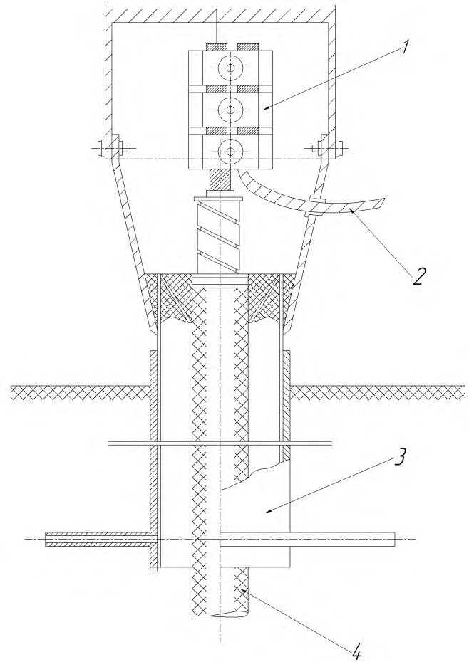
1 - трубопровод; 2 - рельс; 3 - предохранитель; 4 - амперметр с шунтом; 5 - вентильный элемент; 6 - регулировочный реостат; 7 - рубильник
Рисунок 9 - Типовая схема организации УДЗ
5.2.2 В состав электродренажной установки входят:
- УДЗ;
- КИП с силовым и контрольным выводами от трубопровода;
- контактное устройство с рельсовой цепью;
- соединительные электрические линии (дренажные кабели, шины, провода).
Схема установки дренажной защиты приведена на рисунке 10.
1 - электрический дренаж; 2 - фундамент; 3 - кабельная стойка ; 4 - провод медный гибкий; 5 - дроссель-трансформатор; 6 - дренажный кабель; 7 - полосовая сталь
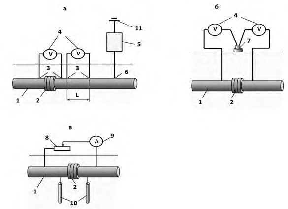
Рисунок 10 - Установка электродренажной станции
5.2.3 УДЗ присоединяют:
- в сетях электрифицированного железнодорожного транспорта (или метрополитена) - непосредственно к тяговому рельсу (при однониточных цепях сигнализации, централизации и блокировки) или к средней точке путевого дросселя, соединенного с отводящим пунктом тяговой подстанции;
- в сетях трамвая - к отводящему пункту, к рельсам или к отрицательной шине отводящих линий тяговой подстанции.
На второй стадии проводят работы по установке самого защитного устройства, подключению соединительных кабелей, выполняют индивидуальное опробование установленного УДЗ и его коммуникаций. Работы второй стадии проводят одновременно с работами специализированных организаций, которые осуществляют пуск, опробование и наладку электродренажной защиты по совмещенному графику.
- разметка участка проведения работ;
- выбор места для производственного хранения оборудования дренажной защиты, монтажных узлов, деталей, метизов, инструментов, приспособлений и материалов;
- доставка на участок строительно-монтажных работ землеройной техники, строительных машин и механизмов;
- подготовка участка для производства работ по устройству электродренажной защиты;
- доставка на участок строительно-монтажных работ оборудования дренажной защиты, монтажных узлов, деталей, метизов, инструмента, приспособлений и материалов.
Хранить оборудование УДЗ, монтажные узлы, детали, инструменты, метизы и материалы на участке производства работ следует в соответствии с технической документацией организацийизготовителей.
- разработка грунта под оборудование электродренажной защиты и кабельные линии;
- прокладка кабелей в грунте или воздушной электролинии;
- монтаж электрических цепей электродренажной установки и устройства грозозащиты;
- монтаж ограждения УДЗ;
- сооружение защитного заземления;
- монтаж дренажного и катодного выводов;
- установка контрольно-измерительного пункта и кабельной стойки;
- монтаж УДЗ;
- рекультивация земельного участка после окончания производства работ.
- выбор площадки для проведения монтажных работ;
- определение места подключения УДЗ к трубопроводу;
- сооружение фундамента в соответствие с проектной документацией УДЗ;
- установку асбоцементной трубы с креплением нижнего её конца в фундаменте, а верхнего - металлическим хомутом;
- установку металлического каркаса (постамента) для монтажа УДЗ;
- монтаж ограждающего устройства.
- распаковку и проверку устройства электродренажной защиты по комплектовочной ведомости;
- установку УДЗ на постамент (каркас);
- установку защитного кожуха;
- подключение к УДЗ соединительных дренажных кабелей.
1 - зажим; 2 - провод медный гибкий; 3 - корпус кабельной стойки; 4 -дренажный кабель
Рисунок 11 - Кабельная стойка
5.3Монтаж установок протекторной защиты
- разметка участка производства работ;
- выбор места для хранения протекторов, монтажных узлов, деталей, метизов, инструментов, приспособлений и материалов перед монтажом;
- доставка на участок строительно-монтажных работ землеройной техники, строительных машин и механизмов;
- подготовка участка для устройства протекторной защиты;
- доставка на участок строительно-монтажных работ протекторов, монтажных узлов, деталей, метизов, инструментов, приспособлений и материалов.
- разработка траншеи для укладки кабелей;
- бурение скважин под установку протекторов;
- установка протекторов в скважинах с центровкой и фиксацией их грунтом;
- укладка в траншею магистрального кабеля;
- подсоединение проводников от протекторов к магистральному кабелю;
- изолирование мест соединений;
- проверка качества изоляции мест соединений искровым дефектоскопом при напряжении 20 кВ;
- заливка скважин с протекторами жидким глинистым раствором;
- засыпка траншеи грунтом с послойным уплотнением;
- установка КИП и подсоединение к нему кабелей.
Примечание - Допускается перед опусканием протектора в скважину увлажнить его в бочке с водой.
- разработка траншей для укладки протекторов и прокладки кабеля к трубопроводу;
- укладка протекторов в траншею;
- укладка в траншею магистрального кабеля;
- соединение проводников протекторов с магистральным кабелем;
- изолирование мест соединений проводников протекторов к магистральному кабелю;
- контроль качества изоляции искровым дефектоскопом при напряжении 20 кВ;
- заливка протекторов жидким грунтовым раствором из расчета 0,05 м³ на каждый протектор;
- засыпка траншеи грунтом с послойным его уплотнением приводными трамбовками в местах укладки протекторов;
- установка контрольно-измерительного пункта и подсоединение к нему кабелей.
- на зачищенную поверхность трубы устанавливают тигельформу;
- в нижнее боковое отверстие тигель-формы, точно в центре, вставляют зачищенный конец кабеля параллельно оси трубы;
- через верхнее отверстие вставляют металлический вкладыш, засыпают порцию термита и закрывают крышку;
- зажигают термитную спичку и опускают ее в отверстие тигельформы;
- быстро покидают шурф и ожидают сгорания термита;
- присоединение провода к действующему трубопроводу необходимо осуществлять дистанционно. При этом персонал и переносной пульт управления поджигающим устройством должны быть удалены от оси трубопровода не менее, чем на 300 м;
- через три минуты после окончания горения термита тигельформу снимают и удаляют шлак с поверхности места сварки;
- место приварки тщательно изолируют изоляционным материалом, предусмотренным проектной документацией системы ЭХЗ, или другим, разрешенным к применению.
- измерить силу тока в цепи «протектор-трубопровод»;
- измерить разность потенциалов «трубопровод-земля» в точке дренажа протектора (спустя не менее 24 ч после подключения протектора); если эта разность более отрицательна, чем минус 0,7 В по медносульфатному электроду сравнения, то протектор работоспособен;
- измерить сопротивление растеканию тока протектора;
- проверить в стойке КИП маркировку проводов на контактных клеммах.
- дату установки;
- пикет (километр) трассы;
- привязку протектора к трассе или опоре линии связи;
- марку протектора;
- вид защитной протекторной установки;
- глубину заложения протектора и трубопровода;
- удельное сопротивление грунта;
- уровень грунтовых вод в момент установки протектора;
- расстояние между протектором и трубопроводом;
- расстояние между протекторами в грунте;
- ток протекторной установки;
- исполнительную схему протекторной установки (группы протекторов).
5.4Монтаж системы мониторинга и дистанционного управления
- КИП и КДП;
- линий энергообеспечения;
- преобразователей тока защитных установок;
- протекторов;
- анодных и защитных заземляющих устройств.
- с конца жилы провода от электрода АЗ или протектора удаляют изоляцию на участке длиной 50 мм;
- оголенный участок жилы облуживают припоем, накладывают на него бандаж из алюминиевой проволоки;
- магистральный кабель разрезают в месте присоединения вывода электрода АЗ или протектора;
- с жил кабеля снимают изоляцию на участке длиной 50 мм;
- оголенные участки жил складывают вместе и скругляют плоскогубцами;
- на оголенный участок жил кабеля накладывают бандаж из шнурового асбеста с учетом диаметра кокиля выбранного термитного патрона (таблица 1);
- жилы кабеля с бандажом вставляют в кокиль термитного патрона;
- для сохранения изоляции кабеля при сварке на оголенный участок жил устанавливают охладитель;
- поджигают термитный патрон, одновременно с началом горения термитного патрона в его кокиль вводят присадочный пруток из алюминиевой проволоки до полного заполнения кокиля расплавленным алюминием;
- после сгорания термитного патрона жилу провода вставляют в кокиль термитного патрона с расплавленным алюминием;
- после окончания сварки охладитель снимают, а муфель и кокиль термитного патрона удаляют со сварного соединения; готовое сварное соединение изолируют в соответствии с требованиями к изолированию соединений, установленными в проектной документации системы ЭХЗ.
Таблица 1 - Типы термитных патронов
| Тип термитного патрона | Площадь сечения свариваемого кабеля, мм² | Диаметр патрона, мм | Высота патрона, мм |
|---|---|---|---|
| ПА-16 | 16 | 20 | 28 |
| ПА-25 | 25 | 25 | 33 |
| ПА-35 | 35 | 30 | 34 |
| ПА-50 | 50 | 35 | 38 |
| ПА-70 | 70 | 35 | 41 |
| ПА-95 | 95 | 45 | 46 |
| ПА-120 | 120 | 45 | 50 |
| ПА-150 | 150 | 55 | 50 |
| ПА-185 | 185 | 55 | 58 |
| ПА-240 | 240 | 60 | 60 |
| ПА-300 | 300 | 65 | 75 |
| ПА-400 | 400 | 75 | 80 |
| ПА-500 | 500 | 80 | 90 |
5.5Особенности устройства систем электрохимической защиты на промысловых трубопроводах
5.6Требования к контролю выполнения работ
Результаты контроля подтверждаются соответствующей документацией: актами на выполненные технологические операции (на первом этапе); специальными индивидуальными формулярами по УКЗ (на втором этапе); оформлением приемки действующей системы противокоррозионной защиты в эксплуатацию (на третьем этапе).
- а) установление соответствия выполненных работ проектным техническим решениям с помощью визуального осмотра и актов на скрытые работы;
- б) измерение значения сопротивления растеканию тока защиты в защитном заземлении преобразователя (не должно превышать проектного значения);
- в) измерение значения сопротивления АЗ растеканию тока;
- г) подключение преобразователя тока защиты к клеммам вторичного напряжения трансформаторной подстанции или к линии электрического питания УКЗ (общей системы или индивидуального энергоснабжения, включая автономные источники питания);
- д) выключение питания преобразователя тока защиты и включение высоковольтного разъединителя трансформаторной подстанции (или подача напряжения в линию энергоснабжения).
Примечания
- 1 При проведении измерений, указанных в перечислении б), применяют омметр соответствующий ГОСТ 23706 - класс точности не более 0,5 и диапазон значений измеряемых сопротивлений от 0 до 1000 Ом. Прибор подключают к шкафу преобразователя тока защиты (согласно инструкции по использованию его подключают к защитному заземлению).
- 2 При проведении измерений, указанных в перечислении в) применяют измерительный прибор с теми же характеристиками, что и при измерениях, указанных в перечислении б). Расчетные значения расстояний между электродами и центром симметрии АЗ ( 𝑎 и 𝑏 на рисунке 12) вычисляют с учетом условий (1)
- 3 Во время проведения измерений, указанных в перечислениях б) и в), провод от АЗ отсоединяют от плюсовой клеммы преобразователя тока защиты, а после проведения измерений этот провод присоединяют обратно.
- 4 Работы, указанные в перечислении д), проводят в присутствии представителя организации энергоснабжения. Подключение преобразователя тока защиты выполняют после отключения высоковольтного разъединителя трансформаторной подстанции (или при снятом напряжении с заземленной линии электропередачи). После подключения преобразователя тока защиты заземление снимают. При автономном энергоснабжении подключение преобразователя тока защиты осуществляют после запуска автономного источника энергии и вывода его на рабочий режим.
1 - АЗ; 2 - измеритель сопротивления заземления; 3 - измерительные стальные электроды; l АЗ - длина АЗ; a и b - расстояние от АЗ до измерительных электродов
Рисунок 12 - Схема измерения сопротивления растеканию тока анодного заземления
- составление плана организации работ, в котором предусмотрено ознакомление наладчиков с объектом, получение и проверка комплектности исполнительной технической документации, уточнение объема и составление графика выполнения работ на весь период с определением конкретных сроков и исполнителей;
- определение технологии наладочных работ, действующих НД на эти работы и сроков их продолжительности с учетом местных трассовых условий;
- определение материально-технического оснащения выполняющих работы специалистов;
- обеспечение выполняющих работы специалистов средствами передвижения по трассе трубопровода (автомобильным транспортом, вертолетом) и, при необходимости, мобильным жилым помещением (например, домиком-вагончиком) для стационарного размещения;
- распределение руководителем работ обязанностей между всеми специалистами, проведение инструктажа по охране труда, уточнение графика работ и получение разрешения на их выполнение.
- а) регулятор выходного напряжения преобразователя тока защиты устанавливают в положение, соответствующее минимальному рабочему напряжению (при наличии у преобразователя более одного диапазона рабочих напряжений устанавливают наименьший);
- б) переводят преобразователь тока защиты с автоматического поддержания защитных потенциалов в неавтоматический режим работы;
- в) осуществляют коммутацию электрической схемы для контрольного измерения разности потенциалов «трубопровод-земля» в точке дренажа УКЗ в соответствии со схемой на рисунке 13;
а - схема поляризационного потенциала, б - схема потенциала с омической составляющей;
1 - трубопровод; 2 - стационарный электрод сравнения;
3 - вспомогательный электрод (датчик потенциала); 4 - КИП со стационарным электродом сравнения; 5 - прибор со встроенным прерывателем тока поляризации вспомогательного электрода; 6 - вольтметр, 7 - КИП, 8 - переносной электрод сравнения
Рисунок 13 - Схема измерения потенциала «трубопроводземля»
- г) при полностью отключенных установках ЭХЗ измеряют потенциал свободной коррозии (естественную разность потенциалов) трубопровода в точке дренажа УКЗ;
- д) проверяют правильность подключения выходных клемм преобразователя тока защиты к трубопроводу и АЗ поочередным включением и выключением преобразователя тока защиты и синхронного измерения разности потенциалов «трубопровод-земля» в точке дренажа; е) включают преобразователь тока защиты и плавно (или ступенчато) изменяют положение регулятора выходного напряжения, проверяя работоспособность преобразователя тока защиты на всех диапазонах регулирования;
- ж) проводят испытания УКЗ (при отсоединенных от УКЗ «дренажных» линиях) на максимальном режиме в течение не менее 72 ч, устанавливая регулятором рабочего напряжения максимальную силу тока, на которую рассчитан преобразователь тока защиты;
- и) устанавливают проектное значение силы тока на выходе преобразователя тока защиты и фиксируют значение выходного напряжения приборами УКЗ, а через 24 ч повторяют измерение разности потенциалов «трубопровод -земля» в точке дренажа;
- к) выключают УКЗ для проведения пуска и опробования системы ЭХЗ соответствующего участка трубопровода.
Примечания
1 При осуществлении коммутации согласно перечислению е) неполяризующийся медно-сульфатный электрод сравнения устанавливают на поверхности земли над трубопроводом, а при подключении измерительного прибора к электроду сравнения и трубопроводу учитывают, что потенциал трубопровода более отрицательный, чем потенциал электрода сравнения. Подключение измерительного прибора к трубопроводу осуществляют через КИП. Для измерений применяют измерительные приборы с входным сопротивлением не менее 10 МОм.
2 При проверке правильности подключения выходных клемм согласно перечислению д) учитывают, что при правильном подключении преобразователя тока защиты значение разности потенциалов «трубопровод-земля» должно быть более отрицательным при включении преобразователя тока защиты. В противном случае полярность подключения преобразователя тока защиты к трубопроводу и АЗ изменяют на противоположную.
3 При проведении проверки преобразователя тока защиты согласно перечислению е) выходное напряжение плавно или ступенчато изменяют от минимального до максимального рабочего значения, которые указаны в прилагаемой к преобразователю тока защиты инструкции по эксплуатации, контролируя изменения выходного напряжения по показаниям вольтметра преобразователя тока защиты.
4 Если при проведении испытания УКЗ согласно перечислению ж) сопротивление цепи УКЗ не позволяет установить указанное максимальное значение силы тока даже при максимальном значении выходного (рабочего) напряжения преобразователя тока защиты, или при максимальном выходном токе разность потенциалов «трубопровод-земля» достигает более отрицательного значения, чем это допустимо, то параллельно выходу преобразователя тока защиты включают нагрузочное сопротивление, рассчитанное на максимальное значение силы тока преобразователя тока защиты в соответствии со схемой подключения на рисунке 14.
1 - трубопровод; 2 - регулируемый добавочный резистор нагрузки; 3 - амперметр; 4 - АЗ; 5 - преобразователь катодной защиты; 6 - точка дренажа
Рисунок 14 - Схема включения прибора и устройств при испытании преобразователей катодной защиты в режиме максимальной нагрузки
- визуальный осмотр для установления соответствия выполненных монтажных работ проектным решениям с использованием актов скрытых работы;
- измерение значения сопротивления растеканию защитного заземления УДЗ, выполненное с помощью измерителя сопротивления по методике, аналогичной методике измерения сопротивления растеканию АЗ в УКЗ (значение сопротивления растеканию не должно превышать проектного значения);
- определение времени суток с наиболее интенсивной нагрузкой, создающей максимальные блуждающие токи и времени минимальных токовых нагрузок тяговой сети электрифицированного рельсового транспорта или иного источника блуждающих токов (определение соответствующего времени суток выполняется по данным владельцев источников блуждающих токов).
При проведении измерений разности потенциалов «трубопровод -рельс» применяют измерительные приборы класса точности не более 0,5 с пределами измерения от ± 0,5 до ± 250 В с шагом 1, 5, 50 и 100 В.
1 - трубопровод; 2 - неполяризующийся медносульфатный электрод сравнения; 3 - вольтметр; 4 - электродренажная установка; 5 - рельсовая сеть; 6 - точка дренажа
Рисунок 15 - Схема включения измерительных приборов при пусконаладочных работах на электродренажных установках
- измерить разность потенциалов «трубопровод-рельс» и «трубопровод-земля» при выключенной электродренажной установке во время максимальной токовой нагрузки тяговой сети железной дороги;
- определить расчетное значение дренажного сопротивления 𝑅 д для предварительного его регулирования. Для расчета может быть использована формула
где R д - значение сопротивления дренажа, Ом;
U max -значение максимальной разности потенциалов «трубопровод-рельс» (измеренное согласно настоящему своду правил), В;
J max -значение максимально допустимого тока дренажа, определенная по паспортным данным электродренажной установки, А;
- R к - cопротивление дренажного кабеля, Ом, определяемое по формуле
где ρ м -удельное сопротивление токоведущего материала дренажного кабеля, Ом . м;
- L -длина дренажного кабеля, установленная проектной документацией и подтвержденная по акту на скрытые работы, м;
- S -сечение токоведущего материала дренажного кабеля, заданное в проектной документации и подтвержденное по акту на скрытые работы, м² ;
- установить переключателем резистора (или иным способом) рассчитанное в проектной документации значение сопротивления дренажа;
- включить УДЗ в присутствии представителя организации, эксплуатирующей электрифицированную железную дорогу, который проверяет влияние электрического дренажа трубопровода на работу цепей автоблокировки и сигнализации железной дороги;
- измерить разность потенциалов «трубопровод-земля» и силу тока дренажа при включенной установке электродренажной защиты в период максимальной токовой нагрузки тяговой сети железной дороги, как это предусмотрено настоящим сводом правил. Силу тока дренажа следует определять по показаниям амперметра электродренажной установки;
- выключить поляризованный электродренаж для проведения пуска и опробования всей системы электродренажной защиты трубопровода.
- проверить по актам на скрытые работы соответствие выполненных работ проектной документации системы ЭХЗ;
- проверить правильность маркировки проводов в КИП. Для этого провода от трубопровода и протекторной установки разъединяют и высокоомным вольтметром измеряют потенциалы проводов относительно неполяризующегося медносульфатного электрода сравнения, установленного на грунт над трубопроводом возле КИП. Значение потенциала провода от протекторной установки должно быть более отрицательным, чем значение потенциала провода от трубопровода;
- измерить естественную разность потенциалов «трубопроводземля» при отключенных протекторной установке и соседних УКЗ.
Измерения проводят согласно настоящему своду правил;
- подключить протекторную установку к трубопроводу и измерить разность потенциалов «трубопровод-земля» в точке дренажа. Измерения следует проводить аналогично требованиям к измерениям естественной разности потенциалов при отключенных протекторных установках. При правильном подключении протекторной установки должно быть смещение разности потенциалов «трубопровод-земля» до уровня, установленного проектной документацией системы ЭХЗ;
- повторить измерения разности потенциалов «трубопроводземля» в точке дренажа спустя не менее чем 24 ч после подключения протекторной установки;
- выключить протекторную установку для проведения пуска и опробования всей системы протекторной защиты трубопровода.
- визуальный осмотр с использованием актов на установку ВЭИ и связанные с этим скрытые работы, проверка соответствия выполненных монтажных работ (места установки ВЭИ, регулирующего резистора, протекторов-токоотводов, КИП) проектным решениям;
- проверить акты на гидравлические и электрические испытания ВЭИ, проведенные организацией-изготовителем;
- измерить величину сопротивления растеканию тока протекторов-токоотводов измерителем сопротивления заземлений; измеренная величина должна быть не более проектного значения; требования к измерительным приборам и аппаратуре должны соответствовать настоящему своду правил;
- определить омметром значение сопротивления шунтирующего резистора и соответствие его проектному значению;
- измерить сопротивление ВЭИ при отключенных шунтирующем резисторе и протекторах-токоотводах. Измерения следует выполнять двумя вольтметрами по схеме, приведенной на рисунке 16 а. Расчет сопротивления изолирующих фланцев, Ом, по результатам измерений выполняют по формуле
где Δ U1 - среднее значение падения напряжения на ВЭИ, В;
Δ U2 -среднее значение падения напряжения на участке трубопровода (подземного металлического сооружения), В;
- ρ - удельное продольное сопротивление трубопровода, Ом/м;
- L - расстояние между точками измерения, м.
- при отключенных шунтирующем резисторе и протекторахтокоотводах определить эффективность действия ВЭИ. Для этого выполнить измерения в соответствии со схемой на рисунке 16 б; при включенной установке ЭХЗ с одной из сторон фланцевого соединения на исправных ВЭИ синхронное измерение показывает «скачок» потенциала;
- закоротить ВЭИ до проведения пуска и опробования всей системы противокоррозионной защиты трубопровода.
а - измерение сопротивления ВЭИ; б - определение эффективности действия ВЭИ; в - измерение и регулирование тока в шунтирующем резисторе; 1 - трубопровод; 2 - ВЭИ; 3 - контакт с трубопроводом;
4 - многопредельный вольтметр; 5 - установка катодной защиты; 6 - точка дренажа; 7 - медносульфатный электрод сравнения; 8 - регулировочный резистор; 9 - амперметр; 10 - токоотвод-протектор; 11 - АЗ
Рисунок 16 - Схемы включения измерительных приборов и устройств при опробовании и наладке ВЭИ
Проверку исправности КИП, оборудованного медносульфатным электродом сравнения длительного действия и вспомогательным электродом, осуществляют измерением разности потенциалов между выводами «электрод сравнения длительного действия -вспомогательный электрод» (не естественной разности потенциалов), «электрод сравнения длительного действия - переносной электрод сравнения» (не более 0,1 В). Если указанные электроды не удовлетворяют этим требованиям, они извлекаются и проверяются согласно 5.1.9.8.
- правильности выполнения коммутационного соединения;
- общего сопротивления узла коммутации.
- измерить естественную разность потенциалов «трубопроводземля» в местах установки КИП (КДП) при выключенных средствах и установках ЭХЗ. Технология проведения контрольных измерений должна соответствовать настоящему своду правил. Измерения следует проводить не ранее, чем через 24 ч после выключения всех средств и установок ЭХЗ, находящихся на контролируемом участке трубопровода, предварительно убедившись в их полной исправности;
- включить УКЗ и отрегулировать режим их работы, при котором в точках дренажа разность потенциалов «трубопровод-земля» соответствует проектным значениям;
- включить установки электродренажной защиты; при использовании поляризованной УДЗ величину сопротивления дренажа регулируют с учетом величины дренируемого тока, которая должна быть не более предельно допустимой величины тока УДЗ;
- измерить в местах установки КИП разность потенциалов «трубопровод-земля» через 72 ч катодной поляризации трубопровода; все измерения в зонах действия установок катодной и протекторной защиты следует проводить в соответствии с настоящим сводом правил. На участках трубопроводов в зонах действия блуждающих токов измерения и обработку результатов необходимо проводить в соответствии с ГОСТ 9.602;
- в зонах действия блуждающих токов разности потенциалов «трубопровод-земля» следует измерять во время максимальной и минимальной токовых нагрузок рельсовой сети;
- включить установки протекторной защиты;
- отрегулировать сопротивление резистора (рисунок 16 в);
- включить и отрегулировать токи в электрических перемычках (при совместной защите с соседними посторонними металлическими подземными сооружениями) для установления разности потенциалов «сооружение-земля» заданной проектной документацией;
- составить по результатам измерений диаграмму распределения разности потенциалов «трубопровод-земля» для всего участка трубопровода; в зонах действия блуждающих токов необходимо наносить минимальные, средние и максимальные значения разности потенциалов «трубопровод-земля».
- одного месяца - после укладки и засыпки участка трубопровода в зонах блуждающих токов;
- трех месяцев - после укладки и засыпки участка трубопровода вне зон блуждающих токов.
Если проектной документацией предусматриваются более поздние сроки окончания строительства средств электрохимической защиты и ввода их в эксплуатацию или, если их установка не может быть произведена в указанные сроки по причинам, не зависящим от производителя работ, то должна быть установлена временная электрохимическая защита согласно НД со сроками ввода в эксплуатацию указанными в настоящем пункте.
5.7Требования к безопасному выполнению работ
ГОСТ 9.602, ГОСТ Р 51164, ГОСТ Р 12.3.048, [8], [9], [10], [11], [12], [13] и [14].
При производстве работ во взрывоопасных зонах (около свечей, запорной арматуры и т.п.) следует руководствоваться [2] К монтажу во взрывоопасных зонах допускается оборудование, соответствующее ТР ТС 012/2011 [15].
- прикасание к контактным проводам и оборудованию, находящемуся под напряжением;
- приближение на расстояние менее 2 м к контактной сети, не огражденным проводникам или частям контактной сети;
- прикасание к оборванным проводам контактной сети или к наброшенным на них посторонним предметам;
- подъем на опоры контактной сети;
- подсоединение средств измерений без диэлектрических перчаток при потенциале более 50 В;
- монтаж каких-либо воздушных переходов через провода контактной сети без согласования с железнодорожной администрацией.
Библиография
- [1] [Федеральный закон от 29 декабря 2004 г. № 190-ФЗ «Градостроительный кодекс Российской Федерации»
- [2] ПУЭ Правила устройства электроустановок (6, 7-е изд.)
- [3] ПБ 03-273-99 Правила аттестации сварщиков и специалистов сварочного производства
- [4] Приказ Федеральной службы по экологическому, технологическому и атомному надзору от 14 марта 2014 г № 102 «Об утверждении Федеральных норм и правил в области промышленной безопасности «Требования к производству сварочных работ на опасных производственных объектах» (зарегистрирован в Министерстве юстиции Российской Федерации 16 мая 2014 г., регистрационный № 32308)
- [5] ВСН 39-1.22-007-2002 Указания по применению вставок электроизолирующих для газопровода
- [6] РД 153-39.4-091-01 Инструкция по защите городских подземных трубопроводов от коррозии
- [7] Приказ Министерства труда и социальной защиты Российской Федерации от 8 сентября 2014 г. № 614н «Об утверждении профессионального стандарта «Специалист по электрохимической защите от коррозии линейных сооружений и объектов» (зарегистрирован в Министерстве юстиции Российской Федерации 26 сентября 2014 г., регистрационный № 34196)
- [8] Приказ Федеральной службы по экологическому, технологическому и атомному надзору от 12 ноября 2013 г. N 533 «Об утверждении Федеральных норм и правил в области промышленной безопасности «Правила безопасности опасных производственных объектов, на которых используются подъемные сооружения» (зарегистрирован в Министерстве юстиции Российской Федерации 31 декабря 2014 г., регистрационный № 30992)
- [9] Приказ Министерства труда и социальной защиты Российской Федерации от 24 июля 2013 г. N 328н «Об утверждении Правил по охране труда при эксплуатации электроустановок» (зарегистрирован в Министерстве юстиции Российской Федерации 12 декабря 2013 г, регистрационный N 30593)
- [10] Приказ Министерства труда и социальной защиты Российской Федерации от 17 сентября 2014 г. N 624н «Об утверждении Правил по охране труда при погрузочно-разгрузочных работах и размещении грузов» (зарегистрирован в Министерстве юстиции Российской Федерации 5 ноября 2014 г, регистрационный N 34558)
- [11] Приказ Министерства труда и социальной защиты Российской Федерации от 23 декабря 2014 г. № 1101н «Об утверждении Правил по охране труда при выполнении электросварочных и газосварочных работ (зарегистрирован в Министерстве юстиции Российской Федерации 20 февраля 2015 г, регистрационный N 36155)
- [12] Приказ Министерства труда и социальной защиты Российской Федерации от 17 августа 2015 г. № 552н «Об утверждении Правил по охране труда при работе с инструментом и приспособлениями» (зарегистрирован в Министерстве юстиции Российской Федерации 2 октября 2015 г, регистрационный N 39125)
- [13] СП 2.2.2.1327-03 Гигиенические требования к организации технологических процессов, производственному оборудованию и рабочему инструменту
- [14] СНиП 12-04-2002 Безопасность труда в строительстве. Часть 2. Строительное производство
- [15] Технический регламент Таможенного союза ТР ТС 012/2011 «О безопасности оборудования для работы во взрывоопасных средах», утвержден Решением Комиссии Таможенного союза от 18 октября 2011г. № 825
- [16] ВСН 012-88 Строительство магистральных и промысловых трубопроводов. Контроль качества и приемка работ. Часть II. Формы документации и правила ее оформления в процессе сдачиприемки